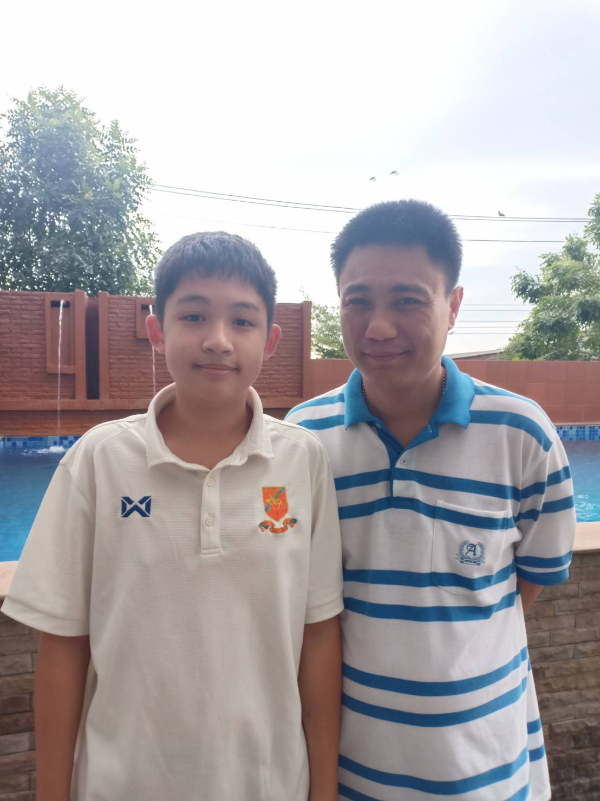
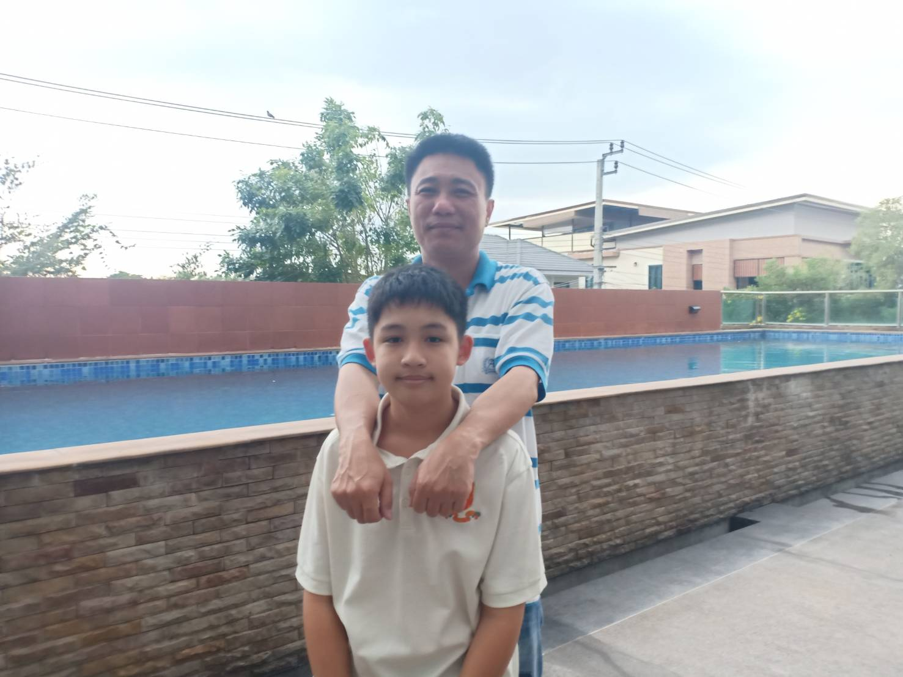
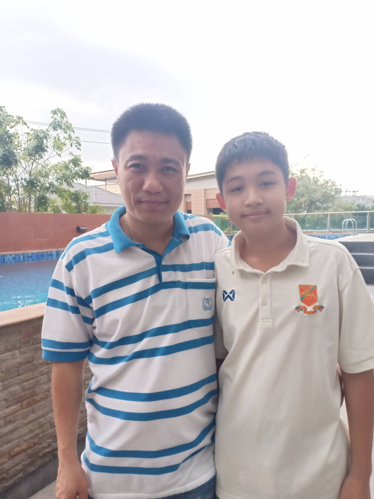
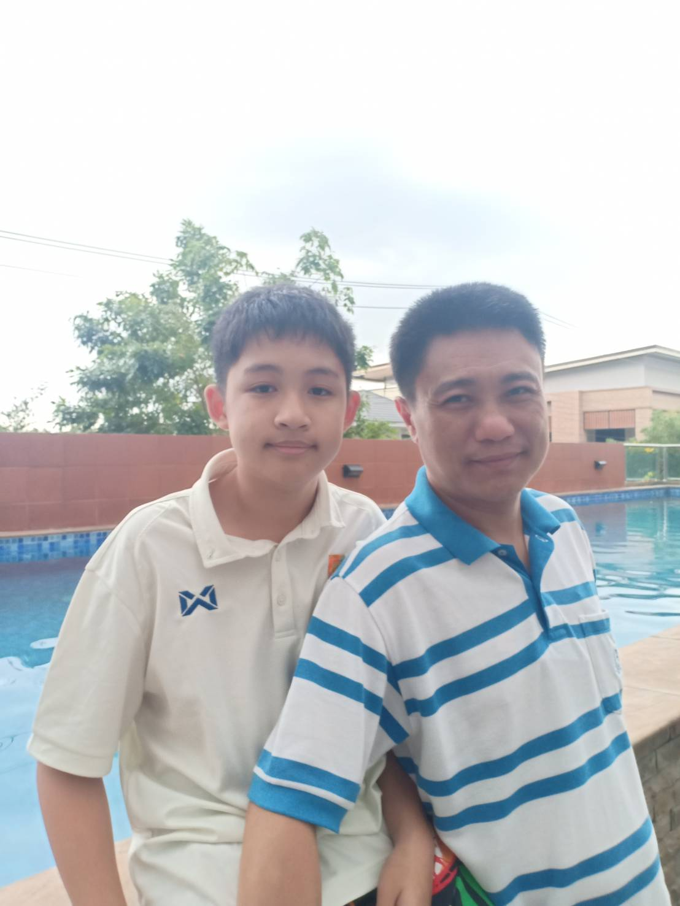
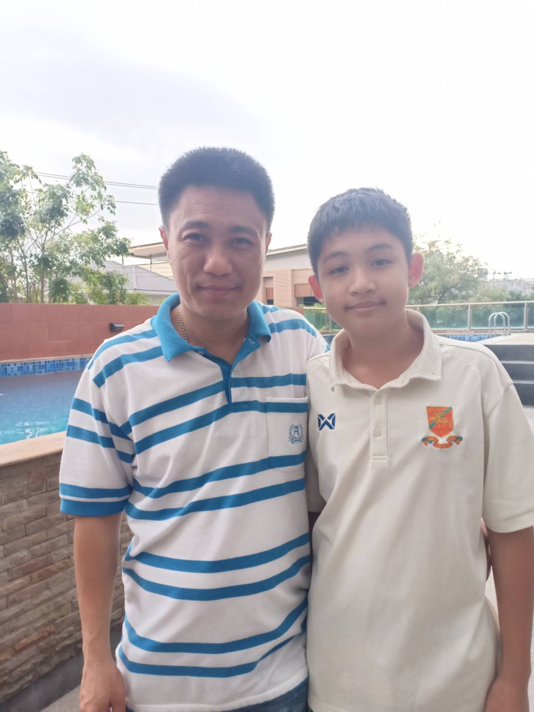
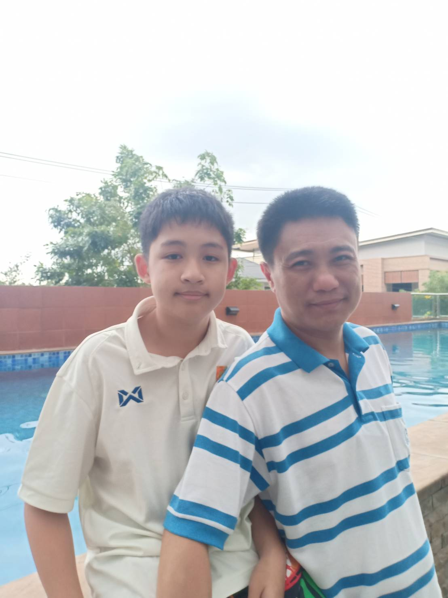

สุขสันต์วันพ่อ💛💛💛
5 ธันวาคม 2568

สิ่งที่อย่างจะบอกพ่อ
พ่อคือคนที่ยอมเหนื่อยแทนผมเสมอ แม้บางครั้งจะไม่พูดคำว่ารักออกมา แต่ทุกการกระทำของพ่อคือคำว่ารักที่ชัดเจนที่สุด พ่อสอนให้ผมรู้จักความอดทน ความรับผิดชอบ และการยืนหยัดแม้ในวันที่ลำบาก ทุกก้าวที่ผมเดินมาได้จนถึงวันนี้ ล้วนมีพ่อคอยเป็นแรงผลักอยู่ข้างหลังเสมอ
ลูกอาจไม่ใช่ลูกที่เก่งที่สุด หรือพูดเพราะที่สุด แต่ลูกอยากให้พ่อรู้ว่า ลูกภูมิใจที่ได้เกิดมาเป็นลูกของพ่อ ขอบคุณสำหรับทุกหยาดเหงื่อ ทุกความเสียสละ และทุกความห่วงใยที่พ่อมอบให้โดยไม่เคยร้องขออะไรตอบแทน
ในวันพ่อนี้ ลูกขออวยพรให้พ่อมีสุขภาพแข็งแรง มีรอยยิ้มในทุกวัน และรู้ไว้เสมอว่าลูกรักและเคารพพ่อจากหัวใจ ไม่ว่าจะนานแค่ไหน พ่อจะเป็นคนสำคัญที่สุดของลูกตลอดไป

 



บทกลอนมอบให้พ่อ
พ่อคือเสาหลักค้ำฟ้าให้ลูกยืนแม้เหนื่อยฝืนก็ยอมทนไม่บ่นไหว
เหงื่อทุกหยดคือรักอันยิ่งใหญ่
เพื่อให้ลูกก้าวไปอย่างมั่นคง